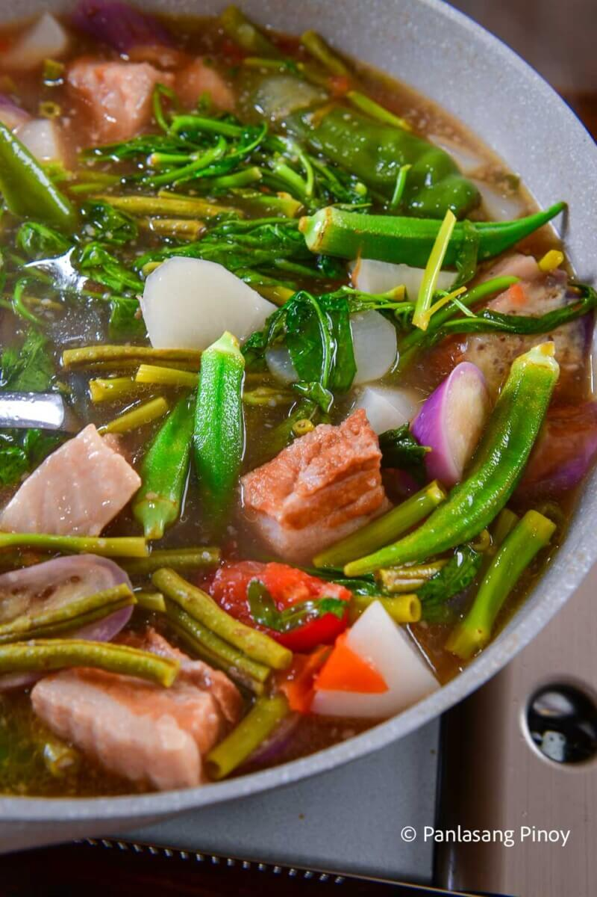

Risotto

Description
Sinigang is a sour soup native to the Philippines. This recipe uses pork as the main ingredient. Other proteins and seafood can also be used. Beef, shrimp, fish are commonly used to cook sinigang. The chicken version, on the other hand, is called sinampalukang manok. I prefer to use either pork belly or buto-buto when cooking sinigang. The latter refers to cuts with bones intact. These are either pork neck bones, chopped spare ribs, and chopped baby back ribs. Pork shoulder and ham can also be used when cooking sinigang.
During rainy days, I enjoy my sinigang meal with rice and a few pieces of fried tuyo. These are small fish that were salted and dried under the sun. It is a good combination as far as I am concerned.
Ingredients
- Pork Belly
- Tamarind
- Kangkong
- String Beans
- Eggplant
- Radish
- Green Pepper
Steps
- The old school method of cooking sinigang makes use for fresh young tamarind. This has to be boiled until enough sourness is extracted from it. In this recipe, I boiled the tamarind in 2 quarts of water for 40 minutes. It can be done for up to 1 hour for optimal results.
- Once the flavors are extracted from the fruit, the solid parts of the tamarind need to be removed. Do this by running the water into a kitchen sieve or a strainer. I recommend squeezing the tamarind afterwards. You will be surprised on how much flavors are left in the pulp.
- Traditional sinigang is cooked plainly by boiling all the ingredients together. Start by pouring the tamarind broth (in step 1) into a cookware of your choice. Deep and wide pots are perfect for this.
Boil the liquid and then add some onion and tomato. This will add flavor to the broth. This is also the proper time to add the pork belly. Make sure to cover your pot so that the liquid can boil quickly.
- The first batch of veggies to add are daikon radish and eggplants. Some people also add their string beans at this point if they want it to be extra soft later on. I prefer mine to be a bit crisp.
After 5 minutes of cooking in low heat (above simmering temp), add the long green peppers, string beans, remaining tomatoes, and okra and continue cooking for 3 minutes.
- There is one vegetable that needs to be added yet. I am referring to the water spinach. I personally add the stalk and leaves on the later part of the process to retain its freshness. It is important to serve the soup right away (while piping hot) for best results.
- Quickly cook it for around 2 minutes before adding the water spinach leaves. Cover and turn the heat off. You will basically be cooking the leaves using the residual heat inside the pot. Do this for 3 to 5 minutes. It should be enough for you to prepare the rice and side dishes on the dining table before announcing to everyone that dinner (or lunch) is served.